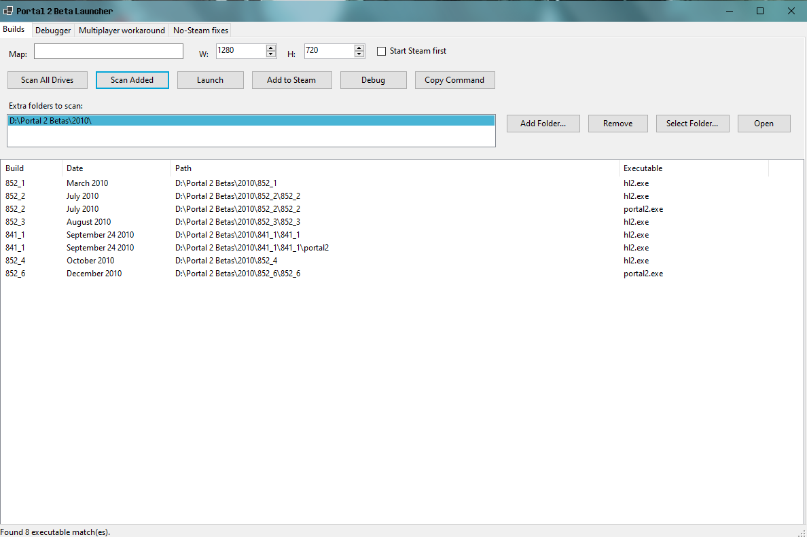

Original release
Portal 2 BETA Launcher — R-1
The first public release of P2BL, establishing the original launcher and utility workflow.
Features in R-1
- Scan connected drives and saved/custom folders for Portal 2 beta builds.
- Display detected builds and their executable paths.
- Launch detected beta builds directly from the launcher.
- Optional map argument and configurable launch resolution.
- Optional Steam startup before launching.
- Add detected beta builds as Steam shortcuts, with a backup of
shortcuts.vdfbefore modification. - Install bundled No-Steam fixes and back up existing files before installing a fix.
- Manage Windows TCP port proxies for beta setups that need port forwarding.
- GUI and console/advanced operation modes.
Screenshot

Release notes
R-1 is the original prototype release. Later R-2 builds substantially rebuild the interface and expand the launcher architecture.
EULAs & Licenses